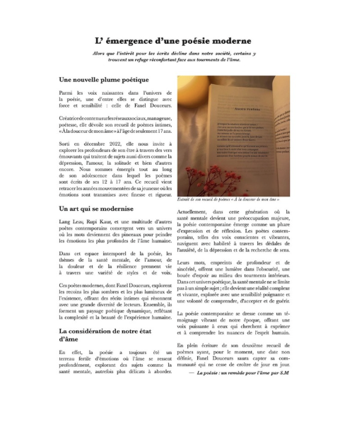

EXPRIMER
Article de journal

Ce projet a été réalisé en BUT 1, au semestre 2, dans le cadre d’un cours d’écriture multi-narration. Il s’agissait de rédiger un article sur un domaine artistique de notre choix. J’ai choisi de traiter la poésie en mettant en avant le travail de Fanel Douceurs à travers un texte intitulé “La poésie : un remède pour l’âme”.
Le fait que l’article puisse potentiellement être publié en ligne m’a amenée à être attentive à la clarté et à la structure du texte. J’ai ensuite choisi de le mettre en page sur InDesign afin de lui donner une forme plus éditoriale. J’ai réalisé une mise en page simple, avec un titre, une image et un travail sur les typographies pour améliorer la lisibilité.
Je n’ai pas rencontré de difficultés particulières lors de ce travail, que j’ai trouvé agréable à réaliser. Avec du recul, je suis satisfaite du contenu, mais je pense que le choix des typographies pourrait être amélioré pour renforcer la cohérence visuelle de l’ensemble.
AC 13.01 : Écrire pour les médias numériques.